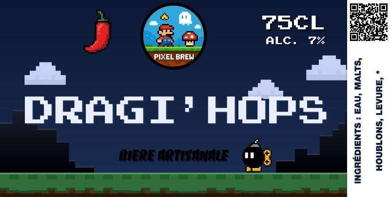

ajout de 22g de houblon
| Malt | Quantité | EBC |
|---|---|---|
| Pale Ale Malt | 4.5 kg | 5 |
| Flaked Barley | 500 g | 4 |
| Roasted Barley | 300 g | 1300 |
| Melano | 300 g | 70 |
| CaraHell | 200 g | 20 |
| Carafa Special III | 300 g | 1400 |
| Houblon | Quantité | Alpha | Addition |
|---|---|---|---|
| Columbus | 18 g | 16 % | 60 min Ébullition |
| Levure | Quantité |
|---|---|
| Fermentis S-04 | 2 sachet |
| Ingrédient | Quantité | Type |
|---|---|---|
| Dragibus Noir | 1 kg | ebullition |
| Piment Ancho | 2 pièce | ebullition |
| Chlorure de calcium | 3.2 g | empatage |
| Chlorure de calcium | 2.3 g | sparge |
| Sulfate de magnésium | 1.5 g | empatage |
| Sulfate de magnésium | 1 g | sparge |